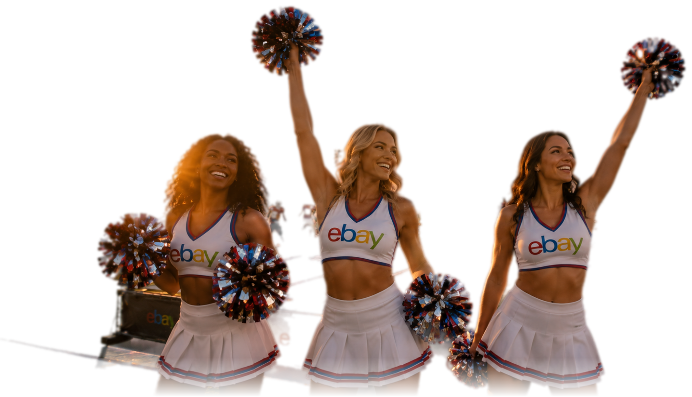
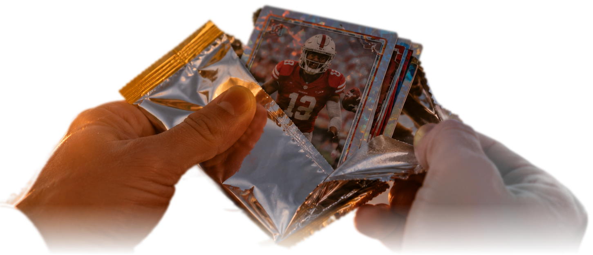
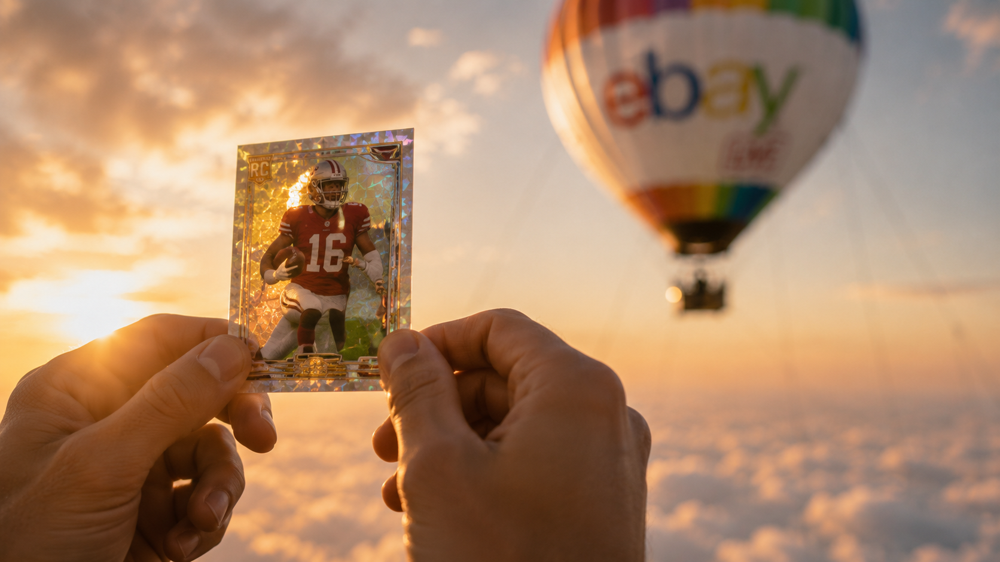
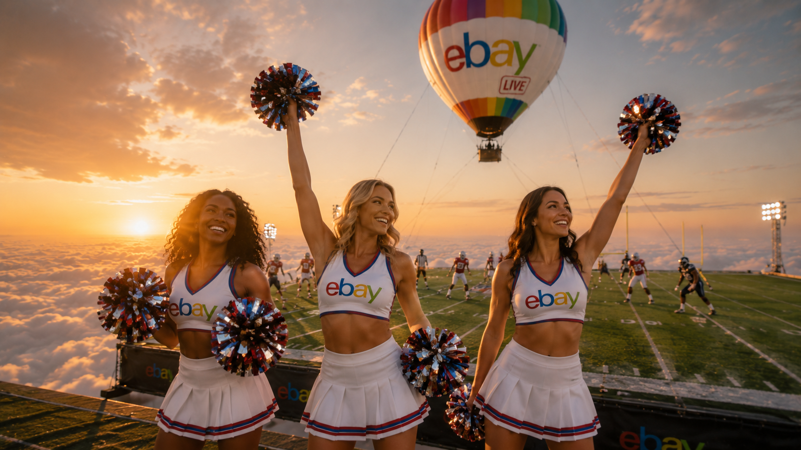
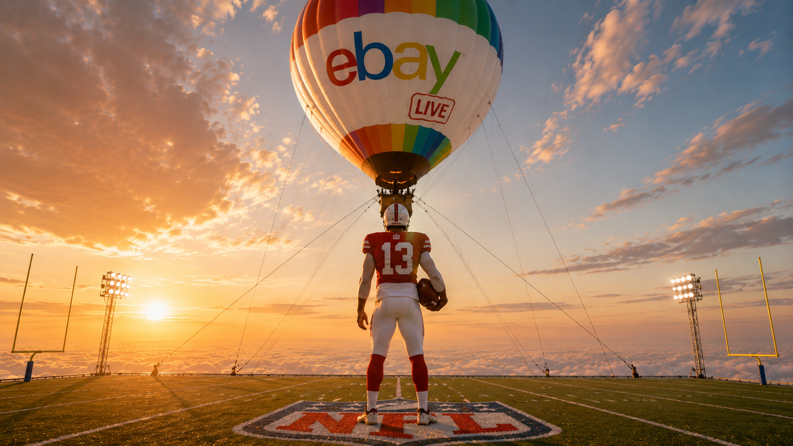

eBay in the sky.
A full eBay Live campaign suspended at 5,000 feet. A fully branded balloon, a football field flown beneath it, and a card break running on the field.




Hi, I'm Callie.
I'm an extreme sports athlete and content creator, a licensed skydiver, freediver, paraglider, and climber. I thrive creating content in extreme conditions and love helping to bring ambitious projects to life.
Ever since I was too young to skydive, I watched these stunts come out of Brazil and dreamed of building one of my own. Over the past few months, that dream has finally started to take shape. I've been here on the ground in Brazil, meeting the balloon pilots, walking the warehouses, sitting with the build teams, and I now have the crew and the resources to make it happen. The team I'm connected to is behind some of the biggest aerial suspension stunts in the world, the same crew that flew every campaign you're about to see.
None of this is rendered. It has been rigged, flown, and filmed by the same balloon pilot, drone pilot, and build team we would use for this project.
The Ford commercial
A major brand's pickup truck, suspended and flown thousands of feet above the clouds.
Stake, a match above the clouds
Ford is not the only brand that has trusted this crew in the air.
A boxing ring, rigged and flown
Two fighters, real gloves, and a long way down.
Aviator by Spribe, a rig above the balloon
Built on top of the balloon instead of beneath it. One more direction we could take ours.
Stake ran this exact format for the 2026 World Cup, a football pitch flown under a balloon, and the internet lost it.
Views across earned and social in the first week of the tournament.
On the primary film in its first few days.
Likes on a single repost of the clip (@433).
Stake's “It’s All At Stake” campaign, June 2026. The @433 repost is publicly verifiable; the reach totals are as reported around the launch.
Football, played above the clouds. A card break, live on eBay.
This has been pulled off for major brands already, never for a marketplace like eBay. A football field flown under the balloon, thousands of feet up, with certified skydivers dressed as the players and cheerleaders on board. While the game runs, Break'n Bad opens sports card packs live, and the whole thing streams on eBay Live.
The break
Break'n Bad opens sports card packs live in the air, the same kind of card break eBay Live fans already tune in for, with the pull happening mid-game.

The sideline
And because they are all skydivers, the game ends the only way it could. The whole roster jumps off the platform.

Built for eBay Live
Every pull, live for bids.
With a Starlink on board, the whole stunt could potentially even stream live from the sky.


Let's build the one nobody's ever seen.
All that's left is deciding to fly it.